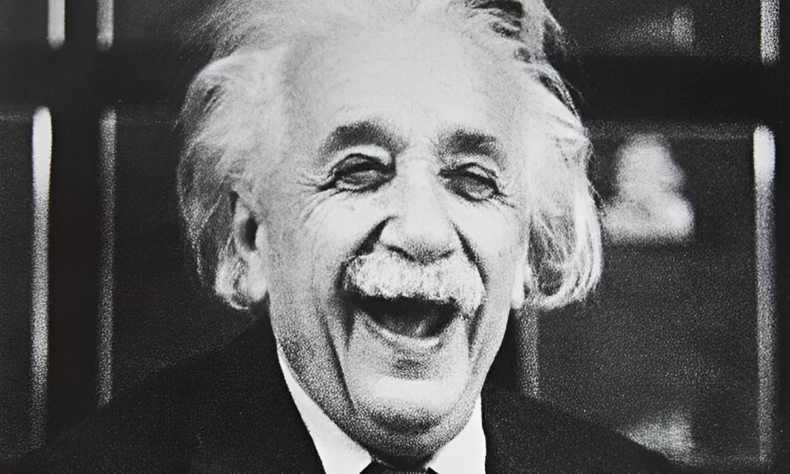

Galerie
Din cauza unei boli netratate de o lungă perioadă de timp și refuzului de a i se efectua o intervenție chirurgicală asupra arterelor cardiace, Einstein se stinge din viață în 1955 în urma unui atac de cord. Conform dorinței sale, marele savant a fost incinerat, iar cenușa a fost aruncată într-un râu necunoscut din New Jersey.
Înaintea incinerării, patologul Spitalului Princeton, Thomas Stoltz Harvey i-a scos creierul, pentru a fi păstrat, fără permisiunea familiei, în speranța că în viitor se va descoperi ce l-a făcut pe Einstein atât de inteligent.